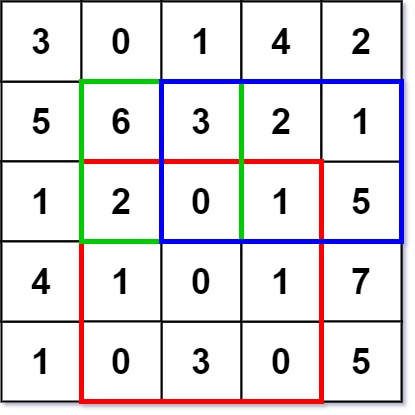

304. 二维区域和检索 - 矩阵不可变
预处理二维前缀和（多一圈 0），每次查询用四角容斥 O(1) 拿到任意子矩阵和。
思路
s[i][j]= 左上矩形(0,0)~(i−1,j−1)的和；递推s[i][j] = 上 + 左 − 左上 + 自己。- 多一圈 0（下标从 1 起），边界不用特判。
- 查询
(r1,c1)~(r2,c2)：s[r2+1][c2+1] − s[r1][c2+1] − s[r2+1][c1] + s[r1][c1]——大矩形减上减左，左上被减两次加回来。
图解
最优解
1class NumMatrix {2 // s[i][j] = 矩形 (0,0)-(i-1,j-1) 的元素和；多一圈 0 免去边界判断3 private final int[][] s;4 5 public NumMatrix(int[][] matrix) {6 int m = matrix.length, n = matrix[0].length;7 s = new int[m + 1][n + 1];8 for (int i = 1; i <= m; i++) {9 for (int j = 1; j <= n; j++) {10 // 上方 + 左方 − 左上重叠 + 自己11 s[i][j] = s[i - 1][j] + s[i][j - 1] - s[i - 1][j - 1] + matrix[i - 1][j - 1];12 }13 }14 }15 16 public int sumRegion(int row1, int col1, int row2, int col2) {17 // 大矩形 − 上面 − 左面 + 左上角（被减了两次，加回来）18 return s[row2 + 1][col2 + 1] - s[row1][col2 + 1] - s[row2 + 1][col1] + s[row1][col1];19 }20}题目
给定一个二维矩阵 matrix，以下类型的多个请求：
- 计算其子矩形范围内元素的总和，该子矩阵的 左上角 为
(row1, col1)，右下角 为(row2, col2)。
实现 NumMatrix 类：
NumMatrix(int[][] matrix)给定整数矩阵matrix进行初始化int sumRegion(int row1, int col1, int row2, int col2)返回 左上角(row1, col1)、右下角(row2, col2)所描述的子矩阵的元素 总和 。
示例 1：

输入: ["NumMatrix","sumRegion","sumRegion","sumRegion"] [[[[3,0,1,4,2],[5,6,3,2,1],[1,2,0,1,5],[4,1,0,1,7],[1,0,3,0,5]]],[2,1,4,3],[1,1,2,2],[1,2,2,4]] 输出: [null, 8, 11, 12] 解释: NumMatrix numMatrix = new NumMatrix([[3,0,1,4,2],[5,6,3,2,1],[1,2,0,1,5],[4,1,0,1,7],[1,0,3,0,5]]); numMatrix.sumRegion(2, 1, 4, 3); // return 8 (红色矩形框的元素总和) numMatrix.sumRegion(1, 1, 2, 2); // return 11 (绿色矩形框的元素总和) numMatrix.sumRegion(1, 2, 2, 4); // return 12 (蓝色矩形框的元素总和)
提示：
m == matrix.lengthn == matrix[i].length1 <= m, n <= 200-105 <= matrix[i][j] <= 1050 <= row1 <= row2 < m0 <= col1 <= col2 < n- 最多调用
104次sumRegion方法
题面取自力扣当前版本。
数据快照 2026-11-04。题面版权归力扣所有，本站点仅供本人学习使用，请勿对外发布。